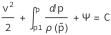
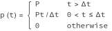
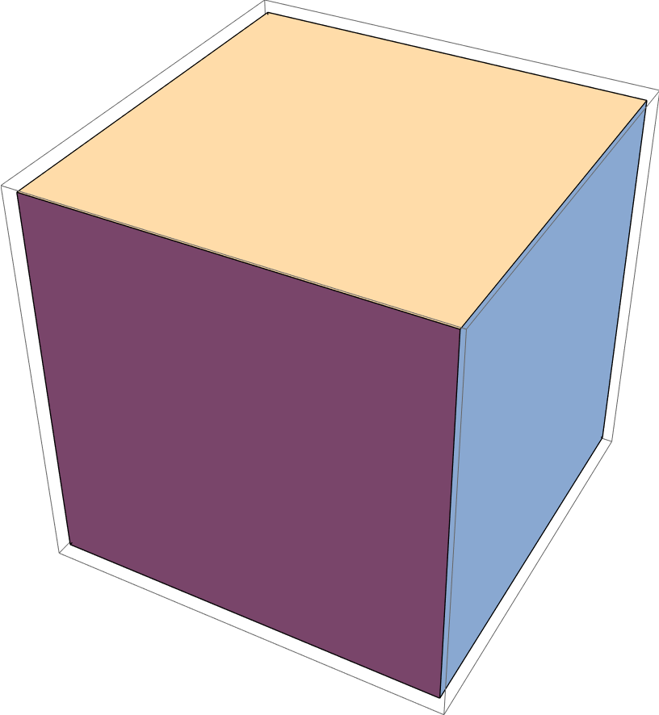
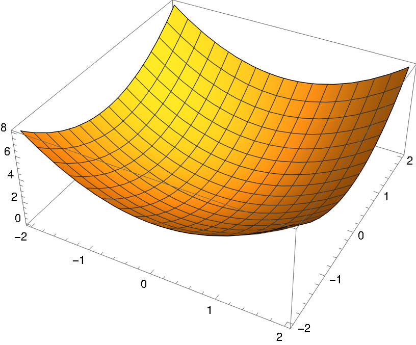
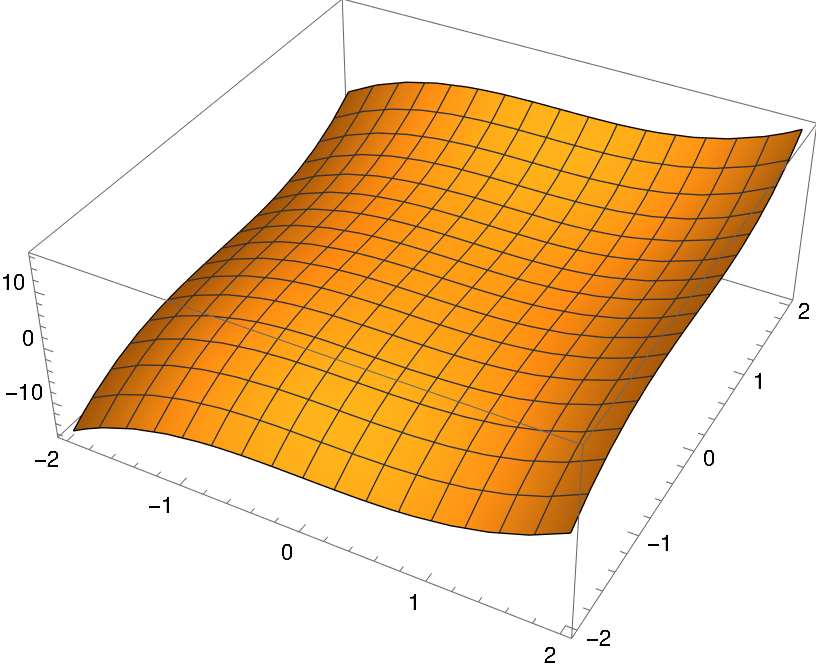
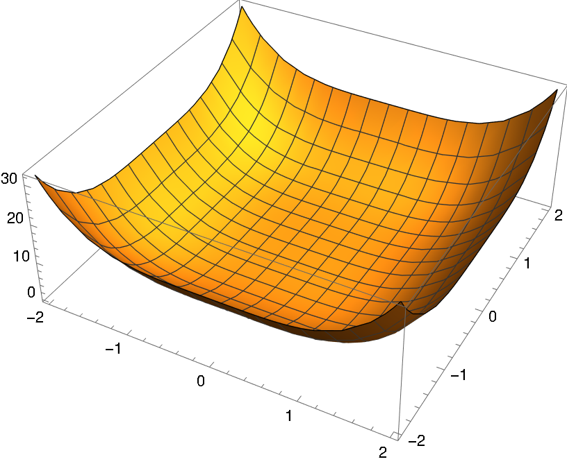

this is a design template for the translunar notebook publishing format. it covers all the kinds of embedded and generated content we want to support.
notebooks are divided into heirarchies of blocks (corresponding to mathematica groups). the first level of blocks is visually distinguished, the others are only represented by indentation.
typesetting
the normal stuff, inline links, text decorations, etc. notebooks often include mathematical typesetting in inline and block forms, as well as heirarchical lists. we avoid any client-side rendering of mathematical content, so they're included as svgs.
formulas
formulas can be given in block form:

optionally numbered:
1.1

and included inline in text eg . inline markup is assumed to follow typographical conventions so it's not too tall.
code
the notebooks use an input/output cell model for representing code. one input cell may have multiple output cells. since it is common to use nonlinear layouts in mathematica, input code and output values are also provided as svgs.
output cells can include complex graphics objects, given as pngs

often we want to include non-notebook code snippets and inline code. code is given as text for now, eg Integrate[Sin[x], x]. code sections can be in a variety of languages and may include multiple snippets.
type :: matrix(m, n)
integer, len :: m, n
real, dimension(m,n) :: dataa
end type
function ex() returns(first)
matrix(4,4) :: matrix
real :: first
first = matrix%data(1,1)
end function
layout
articles and notebooks can include heirarchical lists of arbitrary depth, as well as footnotes and quotes.
heirarchies
we use heirarchical lists a lot, and some of them get pretty large and/or deep.
- this is a bulleted list
- with some nested content
- list elements may include inline code or inline formulas, but they never include images
- we use figures (see below) for lists of images
- this is a numbered list
- list elements get pretty deep in some cases
- two levels
- three levels
- at this point we might want them to be foldable idk
- four levels
- need to use css counters so the ordinals aren't nonsense
- five levels
figures
because this is an academic publishing format, we also want to include grids of figures in a responsive list, along with explanation text.

plot of x^2 + y^2

plot of x^3 + y^3

plot of x^4 + y^4
quotes
quotes are just texts along with a citation/context block
In the words of Kronecker, the positive integers were created by God. Kronecker would have expressed it even better if he had said that the positive integers were created by God for the benefit of man (and other finite beings). Mathematics belongs to man, not to God.
- errot bishop's constructive analysis
[1]:
arbitrary text footnote
[sig21]:
fake citation, sig selene, 2021